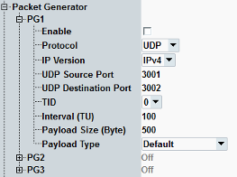

This section configures up to three packet generators. For background information, see "Packet Generator".

Enables or disables the packet generator. If enabled, the R&S CMW repeatedly transmits packets of the configured protocol type to the DUT.
Remote command:The protocol underlying the generated packets: ICMP ("Ping") or UDP.
Remote command:Select the IP version to be used for generating packets.
Remote command:Selects the TID signaled by the packet generator.
Remote command:The source/destination port of the UDP packet generator.
Remote command:Time between packet transmissions in units of 1024 μs.
Configure it long enough to transmit a packet with the given protocol and payload size at the current rate. If the interval is too short to transmit a packet, the scheduled packet transmissions are silently canceled.
Remote command:Size of a packet's payload in bytes.
Remote command:Bit sequence to be transmitted as payload.
Remote command: